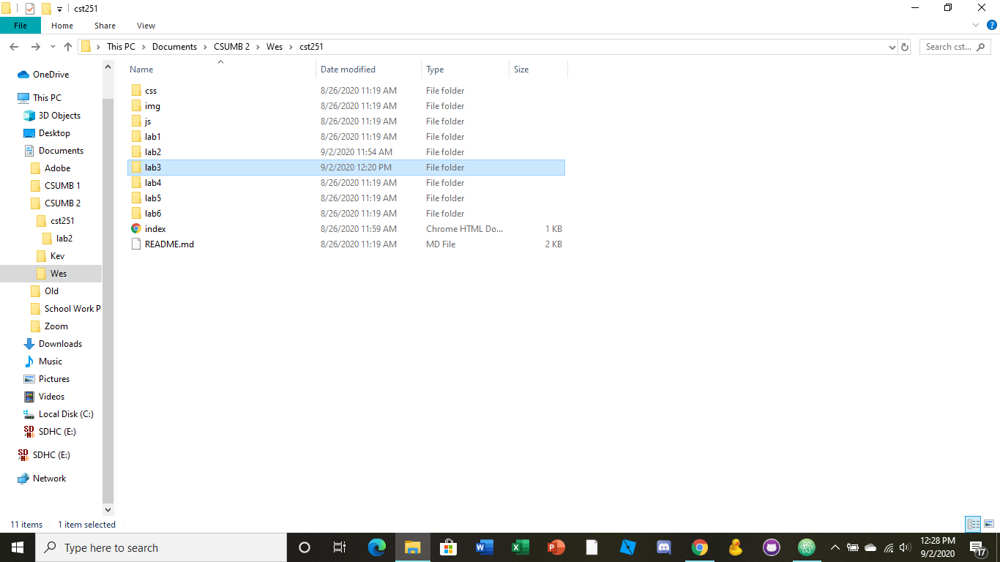

The goal of this lab was to introduce file organizazion and how to link other local files to an html file.
I found creating the html files somewhat easy, i did find trouble with linking my image to the file. It kept appearing sideways on the web, so i have to edit it within Illustrator to fix it.
My file structure appears as follows.
